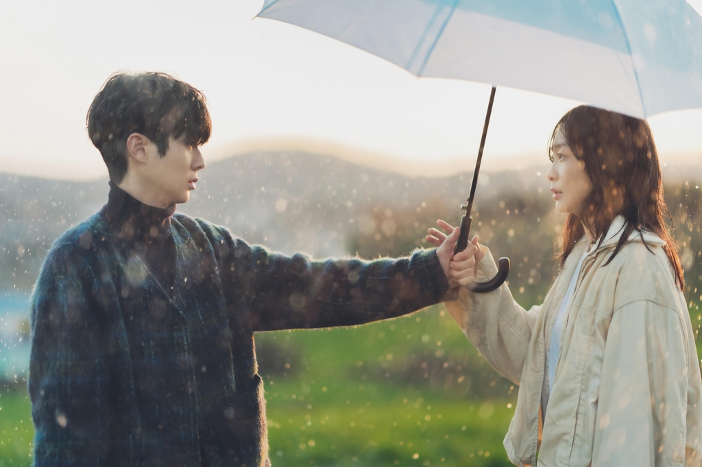

인생 드라마

이 드라마는 10년 전 다큐멘터리 촬영을 계기로 만나게 된 두 남녀가 오랜 시간이 지나 다시 엮이면서 벌어지는 이야기를 그리고 있어요. 고등학생 때 찍었던 다큐멘터리가 우연히 인기를 끌면서, 성인이 된 두 사람이 어쩔 수 없이 다시 함께 촬영을 하게 되는데, 과거의 감정들이 하나둘 되살아나면서 겪는 감정선이 정말 섬세하게 표현됐어요. 여름의 감성을 담은 따뜻한 색감과 비 오는 날의 감정선이 너무 애틋하고 아름다웠어요. 단순한 로맨스 드라마가 아니라, ‘사랑과 이별, 성장’이라는 주제를 감성적으로 그려낸 작품이라서 더욱 와닿았던 것 같아요.